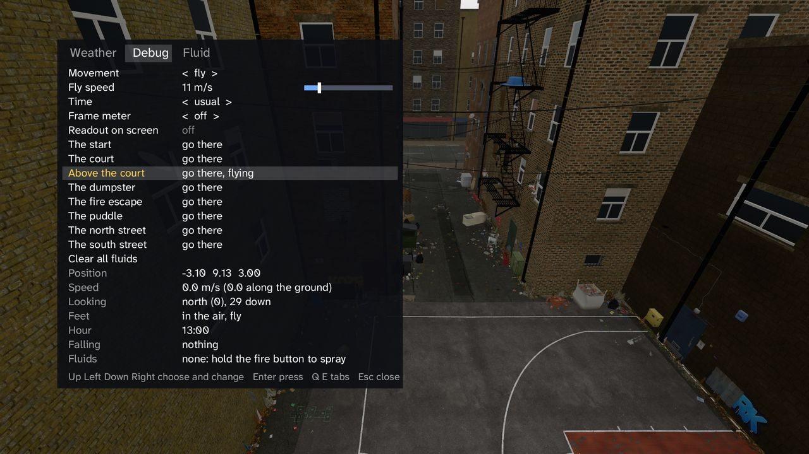

LORE
A free, open-source engine for single-player open-world adventures and action RPGs, in first or third person. Easy to make, fast to play, and worth looking at.
the player: first personthe camera behind them: third person
A game is a folder you can read
Everything a game is made of is a text file beside its level. Save one and the running game changes. Two people can change the same game and their work merges. And lore check reads all of it without opening a window, and says what to fix.
- No project file, no import step, no node graphs
- Levels come from Blender and are never rewritten by the engine
- Your own editor stays first-class, with autocomplete
my-game/ main.luau the rules works today level.glb the place works today map.toml what is where works today people who lives there planned talk what they say planned quests what to do planned
The planned names are a sketch and will change as each piece is designed.
What it draws today
Two example games come with the engine: a jungle with a creek and a lake, and a city alley. These pictures are the alley, as lore run draws it. Its menus, its pause and settings screens, its frame meter and its fluid gun are a few hundred lines of Luau.

Fluids a script controls
Water is the first; honey, oil, tar, acid, lava and mercury are water with a few numbers changed. They fly, splash, run down walls, pool, and change how you walk.

Changed while it lies there
Every row is one field of a kind of fluid. Drag one and every drop of it in the world changes. Keys, mouse and gamepad all work the menu.

Real light, from noon to night
Lamps are given in lumens, as bulbs are sold, and are as bright against the sun and moon as real ones. The picture adapts as an eye does: a shaded street and a dusk open up, a lamplit street closes down.

Tools written in the game's own script
Fly, walk through walls, slow time, jump to a place, read a frame meter. A script binds its own keys and draws its own menus.
Where it is going
LORE starts from FOSSPS, an engine for multiplayer shooters, drops the multiplayer, and turns toward big worlds with people and stories in them. These ideas are the plan. None of them is built yet; each links to the work.
One world, either view
First and third person are the same game with a different camera. Choosing is one line in a script, and one button for the player if the game allows it.
People who explain themselves
What an NPC does is a short list of "when this, do that". Ask any NPC why, and it answers in one sentence.
Save anywhere, for free
The whole world is one snapshot, so a save needs nothing listed by the game. The same trick lets lore check live a day in seconds and say which NPC got stuck.
A story has one home
What has happened is kept in one book of facts, game.lore. Quests, conversations written like a screenplay, and NPCs all read it.
A world you can see across
One continuous world, kept in pieces that load as you cross it with no loading screen, and drawn to the horizon from stand-ins the engine makes by itself.
Land that grows by rule
Grass, trees and rocks place themselves from a few lines you can read. Name a region once and its weather, music and creatures follow.
Sketch a map, walk it
In the editor, paint mountains, water, forest and roads from above. Seconds later you are standing in it.
Enemies, bosses, companions
An enemy is a kind you describe once. A boss is a list of phases. A companion takes orders with one button and a look.
Scripting that reads like the game
Games are written in Luau, a small typed scripting language. The goal is that someone who has played games can read a script and guess what it does.
Runs today
-- main.luau game.onStart(function() print("Hello from Luau!") end) game.onTick(function(step) if game.input.justPressed("jump") then game.input.rumble(0.2, 0.6, 0.1) print("Jump!") end end)
Save the file and the running game updates. "jump" is an action, so the same line works on a keyboard and a gamepad. A game also draws its own level, puts text and bars on the HUD, plays sounds and has a pause menu with settings, written in the same script: what works today.
A sketch — does not run yet
game.view = "third" local guard = game.npc { name = "Guard", at = "Gate", } guard:does { { when = "sees an enemy", doing = "attack" }, { when = "heard something", doing = "investigate" }, { otherwise = "patrol", along = "Gate walk" }, } print(guard:why()) -- Guard is investigating a sound he heard -- 4 seconds ago at the well.
This is where the script API is heading. Every name here will be researched and may change before it is built.
What it is aiming for
Four goals, in priority order. When they conflict, the earlier one wins.
Easy
From install to a game you can walk around in minutes, with error messages that tell you what to do next. This is the "lovely".
Fast
High, stable frame rates and low input latency on mid-range hardware.
Focused
Single-player worlds you explore on foot: open worlds, dungeons, people, quests, melee, bows and magic. No multiplayer, 2D, VR or visual scripting to learn around.
Modern
Vulkan 1.3 rendering, FSR 3.1 upscaling and first-class controller support.
Under it
What the engine is made of. There are no downloads yet: it is built from source.
Rust core
Memory-safe engine code, built with one command.
Single-player only
Nothing connects to anything, and there are no teams, rounds or scores to win. Every part of the engine serves one player in one world.
Controller parity
Every action bindable on a gamepad. Nothing keyboard-only.
Linux, Windows, macOS
The engine runs on Linux and Windows. Packaging a game works on Linux today; Windows is planned and macOS is a stretch goal.
Roadmap
Work is tracked in the open as GitHub milestones, built earliest milestone first.
- M0FoundationsWindow, input, Vulkan, Luau scripts, and removing the multiplayer LORE was born with.
- M1Walk the worldOne player in first or third person: move, climb, use things, fight, hear and pause.
- M2People and creaturesNPCs that find their way, see and hear, follow rules you can read, and say why. Enemies, bosses, flying enemies and companions.
- M3StoriesSaving, game.lore, conversations, quests, items, equipment, skills, magic and dungeons.
- M4Open worldsOne continuous world: streaming, terrain, growth by rule, water, sky, regions, encounters, and a map you sketch and then walk.
- M5Modern graphicsLighting, shadows, anti-aliasing, effects and performance budgets.
- M6ShipPackaged builds for each platform, and releases of the engine.
- M7EditorFly around a level, place things and people, block out geometry, press play.
- M8ToolsA debugger, replays, and jumping to any point in a story.